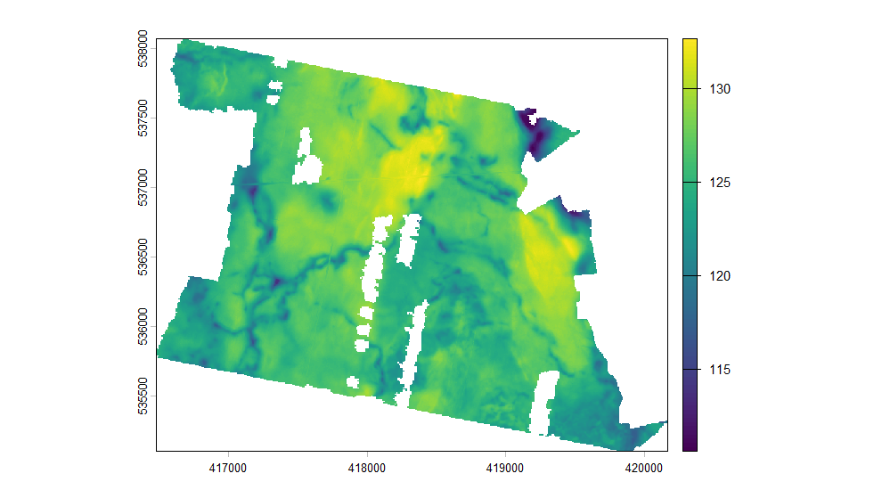
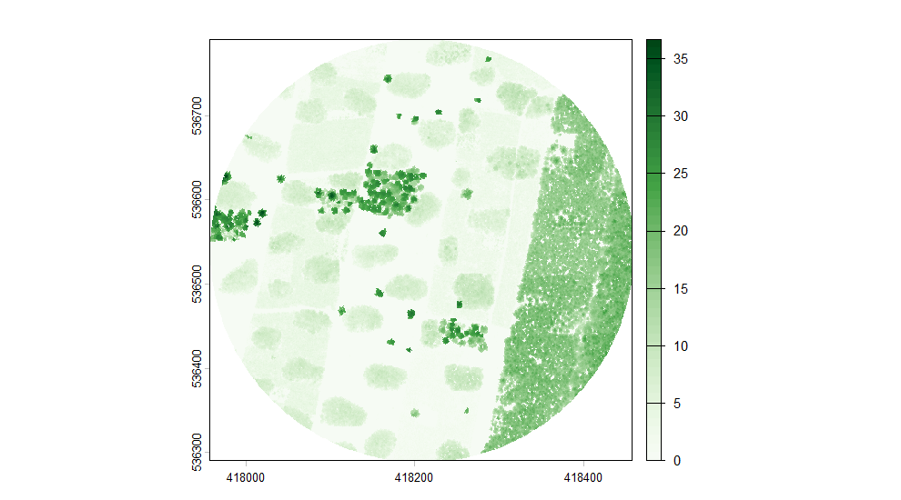
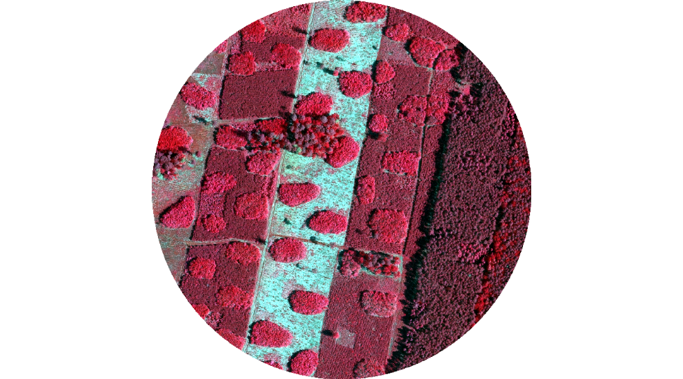
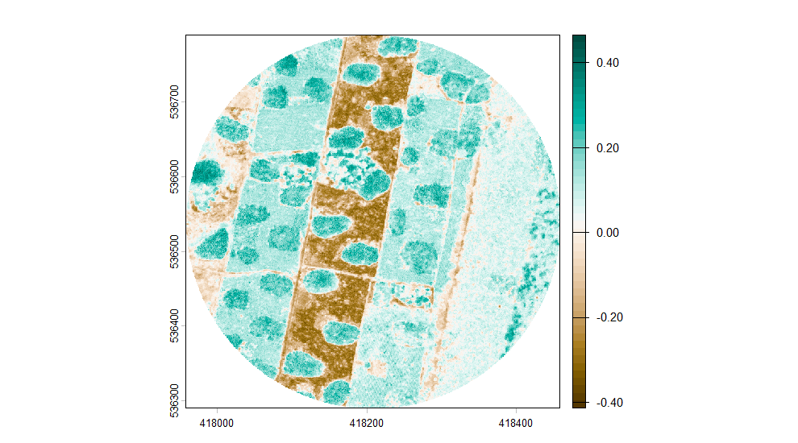

The index tells you what was flown. This is what happens after: turning a selection into a raster you can work with, and the places where that goes quietly wrong if nobody is looking.
library(rgeopl)
library(terra)
aoi <- as_aoi(sf::st_read(rgeopl_example("gleboczek_aoi.shp"), quiet = TRUE))One sheet, several forms
Ask for elevation and the answer is longer than it looks. The service publishes each map sheet in more than one form, and only one of them is a raster.
dem <- dem_request(aoi, quiet = TRUE)
table(dem$product, dem$format)
#>
#> ARC/INFO ASCII GRID ASCII TBD ASCII XYZ GRID ESRI TIN
#> DTM 30 5 12 2
#> DSM 10 0 5 0
#> PointCloud 0 0 0 0
#>
#> Intergraph TTN LAS LAZ Warstwice DXF
#> DTM 2 0 0 2
#> DSM 0 0 0 0
#> PointCloud 0 14 14 0ASCII XYZ GRID is a text list of points and
ESRI TIN is a triangulation; neither will mosaic.
format = "grid" keeps the one that will.
dem <- dem_request(aoi, format = "grid", quiet = TRUE)
table(dem$product, dem$year)
#>
#> 2014 2020 2021 2023 2024 2025
#> DTM 5 5 5 5 5 5
#> DSM 5 0 0 0 5 0
#> PointCloud 0 0 0 0 0 0coverage() answers the next question — whether a vintage
actually covers the area or merely touches it.
Joining tiles
tile_mosaic() downloads what the selection points at and
joins it. crop cuts to the area’s bounding box,
mask to its outline.
terrain <- tile_mosaic(
subset(dem, product == "DTM" & resolution == 1 & year == 2024),
aoi, crop = "aoi", mask = TRUE, quiet = TRUE
)
terrain
#> class : SpatRaster
#> size : 2974, 3685, 1 (nrow, ncol, nlyr)
#> resolution : 1, 1 (x, y)
#> extent : 416481.5, 420166.5, 535097.5, 538071.5 (xmin, xmax, ymin, ymax)
#> coord. ref. : ETRF2000-PL / CS92 (EPSG:2180)
#> source(s) : memory
#> varname : file521c4e9e1160
#> name : DTM
#> min value : 110.43
#> max value : 132.860001
plot(terrain, main = "")
plot of chunk terrain
The layer is called DTM rather than after the temporary
file it was built through, and that name is written into the GeoTIFF as
the band description when you pass filename.
It refuses more than it accepts. A selection that mixes products, vintages, band compositions, resolutions, file formats or vertical datums is a raster that looks finished and is not, so it comes back as an error naming what disagreed:
tile_mosaic(subset(dem, product == "DTM"), aoi, quiet = TRUE)
#> Error:
#> ! These tiles do not belong in one mosaic. They disagree on
#> - vintage: 2014, 2020, 2021, 2023, 2024, 2025
#> - resolution: 1, 5
#> - vertical datum: PL-EVRF2007-NH, PL-KRON86-NH
#> Filter the index to one of each, or pass allow_mixed = TRUE if the mixture is deliberate.Canopy height
A canopy model is one survey’s surface minus its own terrain. Not
every vintage has both — the terrain is remapped far more often than the
surface — so chm_years() is the question to ask first.
small <- as_aoi(sf::st_centroid(sf::st_union(aoi_geom(aoi))), buffer = 250)
chm_years(small, quiet = TRUE)
#> year resolution surface terrain
#> 2 2024 1 2 2
#> 1 2014 1 2 2
canopy <- chm_get(small, year = 2024, mask = TRUE, min_height = 0, quiet = TRUE)
canopy
#> class : SpatRaster
#> size : 500, 500, 1 (nrow, ncol, nlyr)
#> resolution : 1, 1 (x, y)
#> extent : 417957.5, 418457.5, 536290.5, 536790.5 (xmin, xmax, ymin, ymax)
#> coord. ref. : ETRF2000-PL / CS92 (EPSG:2180)
#> source(s) : memory
#> varname : file521c422f7ffc
#> name : canopy_height
#> min value : 0
#> max value : 36.700005
plot(canopy, col = hcl.colors(50, "Greens", rev = TRUE), main = "")
plot of chunk canopy
Without a year the same function goes to the coverage
services instead, which publish the current model and hand it back
already clipped. With one it assembles the model from archive tiles,
which is the only way to reach an earlier flight.
Four bands from two products
Orthophotos come as RGB and as false-colour infrared, and they are the same radiometric result cut two ways: measured on one sheet, CIR’s red and green correlate with RGB’s at 0.999, while its first band correlates with nothing in RGB. So blue is the only band RGB actually adds.
ortho_pairs() lists the flights that published both.
ortho <- ortho_request(small, quiet = TRUE)
ortho_pairs(ortho)
#> year resolution CIR RGB
#> 6 2025 0.25 2 2
#> 5 2023 0.25 2 2
#> 4 2021 0.25 2 2
#> 3 2016 0.50 2 3
#> 2 2013 0.50 2 2
#> 1 2010 0.50 2 3
nrgb <- ortho_stack(ortho, small, mask = TRUE, quiet = TRUE)
names(nrgb)
#> [1] "NIR" "R" "G" "B"
plotRGB(nrgb, r = 1, g = 2, b = 3, stretch = "lin")
plot of chunk nrgb
Bands one to three are near-infrared, red and green, so that is false
colour: vegetation reads red. A vegetation index wants
bands = "cir", which halves the download — infrared and red
already sit in one file, consistent with each other.
ndvi <- (nrgb[["NIR"]] - nrgb[["R"]]) / (nrgb[["NIR"]] + nrgb[["R"]])
plot(ndvi, col = hcl.colors(50, "Green-Brown", rev = TRUE), main = "")
plot of chunk ndvi
Where the chain stops
Point clouds are indexed and downloaded like everything else, but
lidR is the tool for what comes after, and it needs one
thing the files do not carry: older surveys leave their projection
record empty.
clouds <- pointcloud_request(small, quiet = TRUE)
table(clouds$year, clouds$format)
#>
#> LAS LAZ
#> 2014 2 0
#> 2024 0 2pointcloud_get() fetches the tiles and returns them with
the coordinate system the archive says they are in, one line short of a
catalogue:
pc <- pointcloud_get(subset(clouds, year == max(clouds$year)))
ctg <- lidR::readLAScatalog(pc$path)
sf::st_crs(ctg) <- pc$epsg[1]Writing it out
Every raster the package writes is DEFLATE with the predictor its
data calls for, tiled, with the band names and the coordinate system in
the file. Passing filename is all it takes;
gdal replaces those defaults wholesale if you want
something else.
chm_get(small, year = 2024, mask = TRUE,
filename = "canopy_2024.tif")
tile_mosaic(subset(dem, product == "DTM" & resolution == 1 & year == 2024), aoi,
filename = "terrain_2024.tif",
gdal = c("COMPRESS=ZSTD", "PREDICTOR=3", "TILED=YES"))